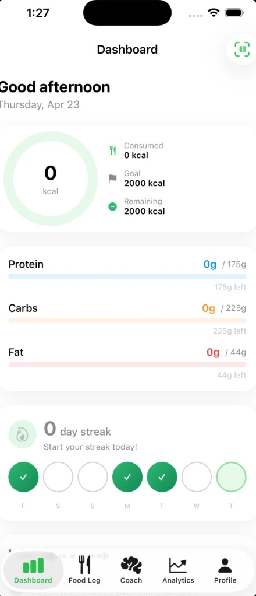
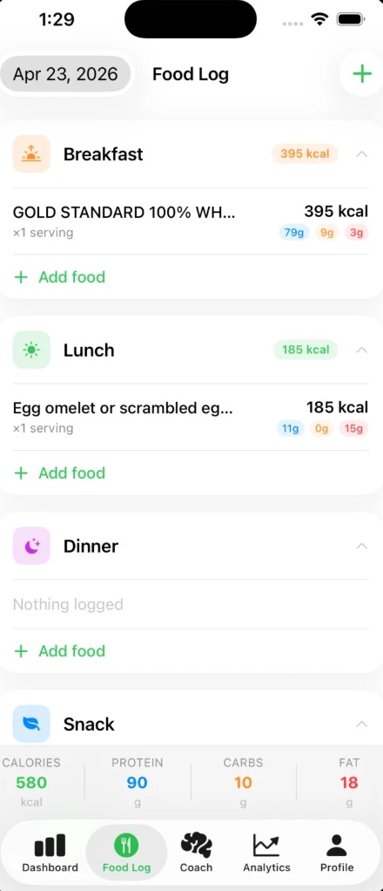
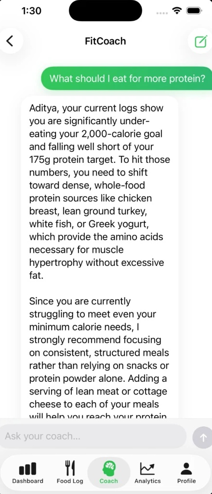
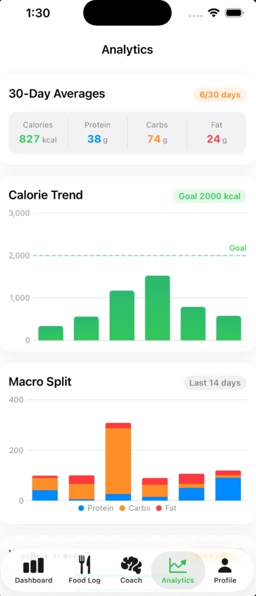

Flagship. Applied AI and native iOS.
FitandFine: nutrition tracking that adapts to the person using it.
A native iOS platform that combines fast food logging, nutrition-label OCR, Apple Health data and four specialized Claude agents. Instead of handing everyone the same static calorie formula, it compares the plan with real behavior and proposes adjustments the user can review.




Four FitandFine screens: FitandFine dashboard with calorie ring and macro bars, FitandFine food log grouped by meal, FitCoach answering a question from the user's own logs, FitandFine analytics with calorie trend and macro splitOverview
Most nutrition apps are good at recording what happened. They are less useful when a routine changes, the initial calorie estimate is wrong, or logging becomes too slow to keep up. I built FitandFine to close the gap between tracking and adaptation.
The app handles barcode lookup, manual entry, nutrition-label scanning, daily logs, macro trends, weight tracking, and activity and sleep from Apple Health, with an AI coach grounded in the user's own history. Behind the interface, a FastAPI backend coordinates food data, asynchronous OCR, analytics and four specialized Claude agents.
It is the clearest expression of the kind of engineer I want to be: close to the user, comfortable across the stack, and willing to stay with a problem past the demo.
How it works
- Make the frequent action fast. Barcode scanning returns a matching food card in under 500 ms against more than 50,000 USDA items. Redis caches repeat lookups; SwiftData keeps previously used foods available offline.
- Let AI interpret, not silently decide. The AI layer can parse a label, explain a weekly pattern, suggest a meal or propose a calorie change. It never moves a goal without confirmation.
- Use personal context carefully. HealthKit supplies steps, active calories and sleep, which the analysis combines with food logs and weight trend rather than treating every day as identical.
- Keep long work off the request path. Celery workers run OCR and the scheduled weekly analysis, so the interface never waits on an unpredictable model call.
- Automate the slow pipeline. The food catalog refresh runs on S3, Lambda and API Gateway and dropped from 25 minutes to 8, with retries, CloudWatch alarms, and unit and integration tests covering 85% of the backend.
- Close the loop. The calorie target re-fits against observed weight trend and activity instead of staying fixed to the formula it started with.
The four agents
- Food Parser. After OpenCV and Tesseract pull text off a nutrition label, this agent turns noisy OCR into structured nutrition data and returns per-field confidence. High confidence flows into the log; anything uncertain goes to a review screen.
- Diet Analysis. Reads a seven-day summary of logs, weight direction and goal settings, then reports adherence patterns, macro imbalances and meal-timing issues in priority order.
- Recommendation. Uses remaining macros, dietary restrictions, allergies and budget to suggest realistic meals rather than a generic food list.
- Progress Evaluator. Compares four weeks of weight and calorie adherence and tries to tell a consistency problem apart from a genuine plateau before proposing a change.
A central orchestrator routes each request to the right agent. The agents never call one another, which keeps responsibilities clear and makes every output easy to validate on its own.
Results
What I learned
The most useful lesson was that AI architecture is product architecture. Confidence thresholds, review states, response streaming, background execution and user confirmation mattered as much as the prompts did.
Specialized agents beat one general-purpose prompt here. Parsing a label, analyzing a week, suggesting a meal and evaluating a plateau need different context and different output rules, and separate schemas make each one testable.
Next: meal planning, food-photo estimation, an Apple Watch companion and faster logging from the Home Screen.